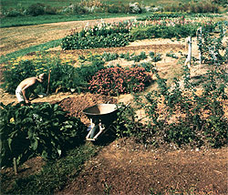

It's entirely possible to combine a love of the soil with independence and good living. Try . . .
I live on Cape Cod, and - unlike many folks who frequent the area - I've made it my permanent home. Furthermore, I'm neither retired nor self-employed, yet I can enjoy morning walks along the shore with my dogs or - if I choose to - sleep late . . . because I don't have to commute into Boston each day, as many of my neighbors do, to earn my living. In fact, it takes me only 30 seconds to get to work.
What's more, I start my day's labor whenever I please and work as many hours as I like. (It's true that I generally put in more than a 40-hour week, but no one has ever suggested that I had to do so.) If - for instance - I want to get up at six, work only until ten, and then finish my job in the evening, I can. Or if I want a day off, I take it . . . and when it rains, I hardly work at all, yet the pay continues. Better still, the entire winter season is a slack period for me, a time to relax or take my vacation . . . all at full pay.
My boss meets with me only once every two weeks or so, and as long as the necessary work gets accomplished, I'm pretty much left to my own devices. My wages are comparable to what many of my commuting neighbors earn, too, yet I don't pay their transportation costs. (My employer even provides me with a van.)
Perhaps best of all, my housing comes free with my occupation . . . I never have to pay any utility or telephone bills . . . and my vegetable plot is cared for on "company time".
WHAT'S MY LINE?
As you may already have guessed, I'm a professional gardener. And if that sounds imposing, you should know that I'm self-taught in my trade, having studied gardening books every night for years simply because I enjoyed them. In fact, I'm convinced that almost anyone could become a professional in this field, given little more than a desire to work outdoors and a willingness to learn. If the possibility appeals to you, begin by asking your county agricultural agent for information, buying gardening books, borrowing from your local public library, and taking college courses part time to improve your skills.
Of course, if you "go all the way" and obtain a degree in industrial horticulture, you could wind up earning a pretty fancy salary. But even in this age of specialization, it's still possible to be a success without formal training. I know one gardener who has worked on the same estate for 27 years, and he still knows so little about horticultural theory and technique that he's scarcely more than an unskilled laborer. But he and his wife live in a nice house . . . buy a new car every three years . . . enjoy a good relationship with their children . . . and have a huge vegetable garden, a cow, some chickens, a secure future, and no ulcers. If that man had a bit more education and ambition, he could have all of those advantages plus a little more cash (though I guess he really doesn't need any more).
Many gardening jobs involve work on private estates. Now if you have any qualms about being a "servant", get rid of them immediately . . . in my experience, gardeners are treated like royalty and are highly respected for their professional knowledge.
The scope of positions does vary from one estate to another, naturally, but you can expect to have your own separate quarters, usually well removed from your employer's dwelling. You'll have privacy . . . there'll likely be plenty of trees to shade and protect you . . . and the only dogs you'll hear barking will be your own. It's easy to fit children into a gardener's lifestyle, too. I'm raising my daughter alone, and she's attending the best of schools (though I'm not paying the taxes). She's no "latchkey kid", either. When she comes home from school, I'm there . . . because even when I am at work, I'm still home.
In return for all the benefits that can come with being a gardener, you will - of course - be expected to keep the grounds in good condition. However, in many such jobs an individual who simply cuts the grass regularly, pulls the weeds often, and keeps everything neat and tidy will be a success . . . even if he or she can offer little else in the way of expertise.
A DAY IN THE LIFE . . .
The first estate I worked on might be considered typical. The job was in New Jersey . . . but I was living in California when I applied (through the mail) for the position. At that time I could give no references and could hardly prove that I had any knowledge of horticulture. Fortunately, the boss was looking for an assistant to a full-time gardener, so I wasn't expected to have all that many credentials. My move across the country was paid for by my employer . . . and when I arrived, I discovered that I'd landed a 38-hour-per-week job in pleasant surroundings, close to the amenities of a metropolitan area.
An ordinary day's work went something like this: I'd awaken at seven o'clock for a walk to the railway station to buy the morning paper, and pause awhile to watch the commuters bound for New York with their briefcases. While I breakfasted at leisure, those poor souls jolted and swayed on the Erie-Lackawanna . . . then changed at Hoboken to the Trans-Hudson Tube. By the time they detrained (usually drained and detained ) and were heading for their Manhattan high-rise offices, I was strolling down a lane shaded by tulip trees, observing the squirrels.
A few minutes later I'd arrive at the greenhouse, having first stopped to check on the vegetable and cut-flower gardens. Once in the solarium, I'd accomplish such tasks as adjusting the airflow and plucking dead leaves off the geraniums and begonias, enjoying the more than 50 houseplants as I did so, then gather up my tools and set off to begin my "real" work.
It might, for instance, be a good day to tidy up the main perennial garden, because the previous night's rain could've done some damage. So I'd spend a few pleasant hours staking and weeding, listening to my transistor radio all the while. When noon rolled around, I'd take my lunch break . . . perhaps stopping by the herb beds to pluck a bay leaf for the chicken I planned to roast later in the day.
In the afternoon, I might decide to work in the cut-flower garden. One of my duties was to provide masses of fresh flowers for my employer all year round, and I was happy to do so . . . particularly since I got plenty of blooms for my house at the same time.
In short, I'd spend the entire day at the sort of tasks that those people in the city were longing to tackle but couldn't until they'd finished their work on Wall Street or wherever. As soon as they arrived home (after another long commute), many of them would change from their city clothes and go out to enjoy their gardens.
I'd change my outfit after a day's work, too, only I'd do something like head into town for an evening at a seaside little theater. Then, when I got home, I'd take a nightcap .. . perhaps imbibing the same whiskey my commuter friends drank. The train travelers probably consumed more, though . . . after all, they had mortgages to worry about.
WHY, HOW, AND WHERE
By now, you may well be convinced that gardening is a good opportunity. However, in order to be absolutely certain you qualify, you must answer the following question with complete honesty: Do you genuinely like rough, often sweaty, outdoor work? Because no matter how much knowledge and education you accrue, be aware that gardening is still almost entirely manual labor.
If your, answer is a wholehearted yes - and if you've at least begun to do some of the "homework" I suggested earlier - I think one of the best ways to go about locating a job like mine is to advertise. To get started, you might try placing an ad in a metropolitan newspaper near the area in which you want to work. (I've found that the East Coast has both the most and the best-paying jobs available. You'll have lots of competition for positions on the West Coast and in the Sunbelt areas . . . so the pay is generally lower there.) I'd suggest that you also advertise in horticulture and gardening magazines.
Of course, if you find a "Help Wanted" listing that appeals to you, by all means answer it, stating your background and ambitions honestly. But remember that when you respond to an ad, you'll be in competition with many other applicants . . . whereas if you place an ad, you're in the driver's seat. And, although the cost may stretch your budget a bit (you can deduct it from your income tax, though), you're almost certain to get some response. Therefore, since your advertisement may well be your first contact with a future employer, be truthful when composing it. If you're an amateur wanting to turn professional, and willing to work hard and learn . . . say so.
As the replies roll in, pay closer attention to those that come from the superintendents of estates than to the ones from estate owners. If you're new to the business, it would be to your advantage to work under a knowledgeable, experienced person (and master gardeners are often "in charge" to such an extent that the owner will hardly be able to walk into the greenhouse without permission!).
SALARY EXPECTATIONS
Even if you're a complete novice, you can ask for - and expect to receive - at least $500 per month, plus the previously mentioned house and utilities. You'll likely get many extras, too, such as all the vegetables you can use (often fruit and eggs as well) . . . owner-financed transportation ... ample vacation time (although you'll likely have to take it during the winter months) . . . and even access to a swimming pool and the estate's other amenities.
All in all, the world 'of professional gardening is wide open to folks desiring an alternative lifestyle that's fulfilling and worthwhile, and that pays. It can also provide a good - and educational - occupation for individuals who are working toward a move to homesteads of their own. But if you're one of the latter group, beware: Your hassle-free "temporary" employment may become a lifelong career!
|
 |
|
|